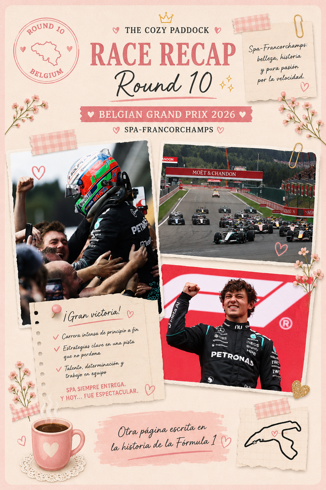
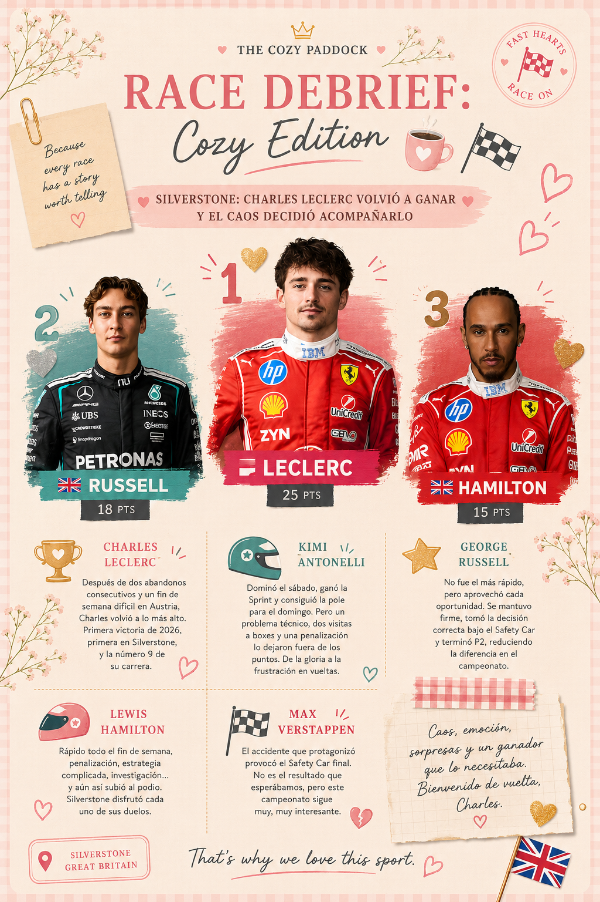
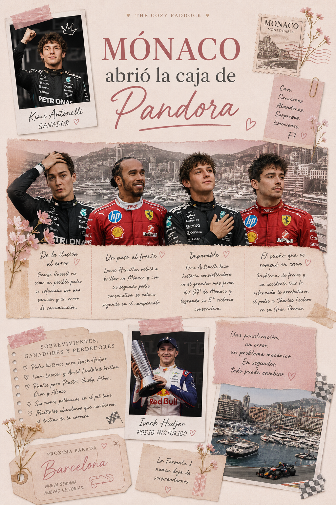

En Spa, sobrevivir también fue una victoria.
PSpa-Francorchamps volvió a demostrar por qué es uno de los circuitos más impredecibles de la Fórmula 1. Entre adelantamientos, estrategias, penalizaciones y abandonos, el Gran Premio de Bélgica nos recordó que, en este deporte, la velocidad es solo una parte de la historia ...

Silverstone: Charles Leclerc volvió a ganar y el caos decidió acompañarlo.
Hablemos de Silverstone.
Porque llegamos al Gran Premio de Gran Bretaña pensando que Ferrari podía tener un fin de semana complicado y terminamos viendo a Charles Leclerc ...

Mónaco abrió la caja de Pandora
Lo que parecía ser otra carrera definida por la estrategia terminó convirtiéndose en un caos absoluto durante los giros finales.
Si bien fue un perfecto fin de semana para olvidar para varios pilotos, otros aprovecharon el desastre para conseguir algunos de los mejores resultados ...

El caos de Canadá confirmó algo: la nueva generación ya llegó
Canadá nos dio uno de los fines de semana más caóticos e intensos de la temporada
Desde equipos reivindicándose, malas estrategias, problemas técnicos y penalizaciones por todos lados, el Circuit Gilles Villeneuve...

Round 5: Gran Premio de Canadá 2026
Estamos oficialmente en semana de carrera y eso solo puede significar una cosa: vuelve el caos controlado de Montreal. El Gran Premio de Canadá 2026 será el quinto round del campeonato y se disputará del 22 al 24 de mayo en el legendario Circuit Gilles-Villeneuve, uno de los trazados más rápidos, impredecibles...
About The Cozy Paddock
The Cozy Paddock es un espacio donde la Fórmula 1 se vive desde una perspectiva más suave y femenina.
Creado para chicas que quieren entender, disfrutar y experimentar el deporte de una forma simple, acogedora y bonita.
The Cozy Paddock is a space where Formula 1 meets a softer, more feminine perspective.
Created for girls who want to understand, enjoy, and experience the sport in a simple, cozy, and beautiful way.
Autoras

Mery Ramirez

Sheyla Franco

Mayra Torreblanca